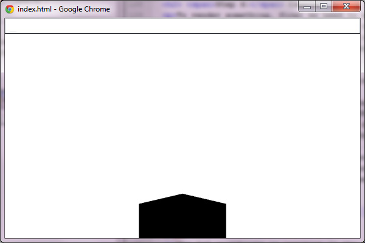
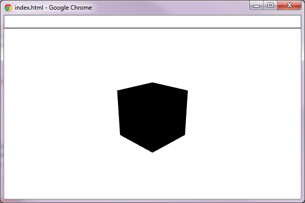
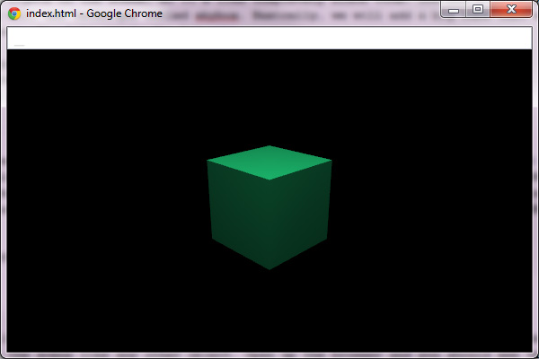

3D graphics in the browser have been a hot topic ever since it was first introduced. But if you were to create your apps using plain WebGL, it would take ages. This is exactly why some really useful libraries have recently came about.
Three.js is one of the most popular, and I will show you how best to use it in order to create stunning 3D experiences for your users.
Before we begin, I do expect you to have a basic understanding of 3D space before we start, as I won't be explaining stuff like coordinates, vectors, etc.
First, create three files: index.html, main.js and style.css. Now, download Three.js (whole zip file with examples and source, or the JavaScript file alone, your choice).
Now, open index.html and insert this code:
<!DOCTYPE html>
<html>
<head>
<link rel="stylesheet" href="./style.css">
<script src="./three.js"></script>
</head>
<body>
<script src="./main.js"></script>
</body>
</html>
Open style.css and insert this code:
canvas
{
position: fixed;
top: 0;
left: 0;
}
This will position the canvas in the left-top corner, because by default the body will have 8px of margin. Now we can proceed with the JavaScript code.
Three.js uses the concept of a display list. This means that all objects are stored in the list and then drawn to the screen. Here, this is a THREE.Scene object. You need to add any object you want to be drawn on the screen to the scene. You can have as many scenes as you want, but one renderer can draw only one scene at once (of course you can switch the scene that is displayed).
The renderer simply draws everything from the scene to the WebGL canvas. Three.js also supports drawing on SVG or 2D Canvas, but we will focus on WebGL.
To get started, lets store the window's width and height in variables, we will use it later:
let width = window.innerWidth;
let height = window.innerHeight;
Now define the renderer and the scene:
let renderer = new THREE.WebGLRenderer({ antialias: true });
renderer.setSize(width, height);
document.body.appendChild(renderer.domElement);
let scene = new THREE.Scene;
The first line defines the WebGL renderer. You can pass the renderer's options in the first argument as a map. Here, we set the antialias to true, because we want the edges of objects to be smooth, not jagged.
The second line sets the renderer size to the size of the window, and in the third one we add the renderer's canvas element to the document
The last one defines the scene, no arguments needed.
Now lets add something to be drawn. Let it be a cube, since it's the simplest 3D object. In Three.js the objects that are being drawn on the screen are called meshes. Each mesh has to have its own geometry and material. Geometry is a set of points that need to be connected in order to create the object. Material is simply the paint.
So, lets create our cube. Luckily for us there are some helper functions in Three.js for creating primitives (simple shapes):
let cubeGeometry = new THREE.CubeGeometry(100, 100, 100);
let cubeMaterial = new THREE.MeshLambertMaterial(
{ color: 0x1ec876 }
);
let cube = new THREE.Mesh(cubeGeometry, cubeMaterial);
cube.rotation.y = Math.PI * 45 / 180;
scene.add(cube);
As you can see, first we create the geometry. The arguments are defining a size of the cube: the width, height and depth.
Next, we define the cube's material. There are a few material types in Three.js, but this time we will use the THREE.MeshLambertMaterial, since we want to have some lighting later (this material uses Lambert's algorithm for light calculations). You can pass the options in the first argument as a map, the same as with the renderer - this is pretty much a rule for more complex objects in Three.js. Here, we only use color, which is passed as a hexadecimal number.
On the third line, we create a mesh using the geometry and material created earlier. Next, we rotate the cube by 45 degrees on the Y axis, to make it look better. We have to change degrees to radians, which is handled by the equation you probably remember from your high school physics class: Math.PI * 45 / 180. Finally, the cube is added to the scene.
Now you could open index.html in your browser to see the results, but you will see nothing because the scene is not rendered yet.
To render something, first we need to add the camera to the scene, so the renderer knows from which point of view it should render stuff. There are a few types of cameras in Three.js, but you'll probably only use THREE.PerspectiveCamera.
This type of camera is presenting the scene as we see our world. Lets create one:
let camera =
new THREE.PerspectiveCamera(45, width / height, 0.1, 10000);
Creating the camera is a bit more complicated than the rest of the things we've done so far. The first argument defines the FOV (field of view), the angle that can be seen from where the camera is. A FOV of 45 degrees looks natural. Next, we define the camera's ratio. This is always the width of the renderer divided by its height, unless you want to achieve some special effects. The last two numbers are defining how close and how far the object can be to the camera to be drawn.
Now we have to move the camera back and up a little, as all of the objects created in Three.js have their position set in the middle of the scene (x: 0, y: 0, z: 0) by default:
camera.position.y = 160;
camera.position.z = 400;
The z coordinate is positive in the direction of the viewer, so objects with a higher z position will appear closer to you (in this case, since we moved the camera, all of the objects will appear further away from you).
Now, lets add the camera to the scene and render it:
scene.add(camera);
renderer.render(scene, camera);
You add the camera just like you added the cube. The next line renders the scene using this camera.
Now you can open the browser and you should see the following:
You should only be able to see the top of the cube. This is because we moved the camera up and it's still looking directly in front of it. This can be fixed by letting the camera know on what position it should look. Add this line after the lines setting the position of the camera:
camera.lookAt(cube.position);
The only argument passed in is a position on which the camera will look.
Now, the scene looks better, but the cube is still black, no matter what color you've set when creating it:
The cube is black, because there are no lights on the scene, so it's like a completely black room. You see a white background because there is nothing to draw apart from the cube. To avoid that, we will use a technique called skybox. Basically, we will add a big cube that will display the background of the scene (usually some far terrain if it's open space).
So, lets create the box. This code should go before the renderer.render call:
let skyboxGeometry = new THREE.CubeGeometry(10000, 10000, 10000);
let skyboxMaterial = new THREE.MeshBasicMaterial(
{ color: 0x000000, side: THREE.BackSide }
);
let skybox = new THREE.Mesh(skyboxGeometry, skyboxMaterial);
scene.add(skybox);
This code is similar to the one that creates the cube. But this time the geometry is much bigger. We've also used THREE.MeshBasicMaterial since we don't need to light the skybox. Also, notice the additional argument passed to the material: side: THREE.BackSide. Since the cube will be displayed from the inside, we have to change the side that gets drawn (normally, Three.js draws only outside walls).
Now the rendered scene is completely black. To fix that we have to add light to the scene. We will use THREE.PointLight, which emits the light like a bulb. Add these lines after the skybox:
let pointLight = new THREE.PointLight(0xffffff);
pointLight.position.set(0, 300, 200);
scene.add(pointLight);
As you can see, we've created the point light with white color, then we are setting its position to be up and back a little, to light the front and the top of the cube. Finally the light is added to the scene like any other object.
Open up the browser and you should see a colored, shaded cube:
Now we will add some movement to the scene. Lets make the cube rotate around the Y axis. But first, we have to change the way that we render the scene. One renderer.render call, renders the current state of the scene once. So even if we animate the cube somehow, we will not see it move. To change that, we have to add the render loop to our app.
This can be achieved using the renderAnimationFrame function, which was created specially for that purpose. It's supported in most of the major browsers, and for those which doesn't support it, Three.js comes with its own polyfill.
So, lets change this:
renderer.render(scene, camera);
to this:
function render() {
renderer.render(scene, camera);
requestAnimationFrame(render);
}
render();
Actually, there is no loop in there, because it would freeze the browser. The requestAnimationFrame function behaves a bit like setTimeout, but it's calling the function passed as quick as the browser is ready. So, nothing really changed in the displayed scene and the cube is still not moving. Lets fix that. Three.js comes with THREE.Clock which can be used to achieve smooth animation of objects.
First, initialize it before the render function definition:
let clock = new THREE.Clock;
Now, each time you call clock.getDelta it will return the time since the last call, in milliseconds. This can be used to rotate the cube like this:
cube.rotation.y -= clock.getDelta();
Add this line between the renderer.render and the requestAnimationFrame calls in the render function. It's simply subtracting the time passed from the cube's rotation on the Y axis (remember that it's in radians) to rotate the cube clockwise. Now open the browser and you should see your cube rotating clockwise smoothly.
You learned how to prepare the scene, add objects and lights, and how to animate things. You can experiment with the app, add more or different objects, lights. It's up to you. Don't forget to take a look at the documentation if you are having any problems.